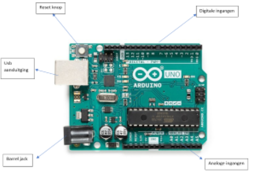

Wat is een Arduino
Een Arduino is een soort microcontroller je van alles mee kan doen. Je moet een programma voor de Arduino schrijven en hij voert dit dan uit. Je kan bijvoorbeeld motoren of lampjes aansturen met een Arduino. Je kan op de Arduino ook sensoren koppelen. Deze kan je dan gebruiken in je programma om dingen mee te doen.
De ingangen
Deze microcontroller kan ingangen krijgen. Zoals bij een normale computer een toetsenbord, kan deze bijvoorbeeld een drukknop krijgen of sensoren. Een knop is een digitale ingang want deze geeft stroom door of niet. Een sensor is meestal een analoge ingang aangezien deze meestal een waarde van 0-5V geven die de Arduino dan omzet naar iets wat wij kunnen begrijpen.
De uitgangen
De uitgangen van een Arduino kan je vergelijken met een bijvoorbeeld het openen van een programma op je normale computer. Bij een Arduino worden uitgangen gebruik om de motoren of lampjes bij voorbeeld aan te laten gaan
De software
De software word gebruikt om ervoor te zorgen dat de ingangen gelezen worden. Dus bijvoorbeeld een sensor lezen. En met deze ingangen worden dan uitgangen gestuurd. De software schrijf je zelf en kan je dus mee vertellen aan de Arduino wanneer de ingangen gelezen moeten worden en wanneer de uitgangen wat moeten doen. De 2 meest voorkomende programma's waar programma's voor de Arduino in worden geschreven. Dat zijn Visual Studio Code van Microsoft en Arduino IDE van Arduino zelf.
De communicatie
Je programma wat je hebt geschreven voor de Arduino word geüpload naar de Arduino via een USB kabeltje. Er kan een communicatie worden opgezet tussen de Arduino en je laptop. Dit is een seriële verbinding. Dit is een gestandaardiseerde verbinding die ervoor zorgt dat machines met elkaar kunnen communiceren. Een meer complexere communicatie is via een wifi of bluetooth module.
De voeding
Een Arduino moet zoals ieder ander elektrisch apparaat stroom krijgen. Deze kan bij een Arduino via 3 wegen komen. De een manier is via een usb kabel uit je laptop. Een andere optie is een spanning van 9 - 12V aan te leggen op de barrel jack. De laatste mogelijkheid is om een spanningsbron tussen de V_IN en de ground te schakelen. Deze spanning moet tussen de 7-12 Volt zitten. Hogere spanningen gaan de Arduino beschadigen.
